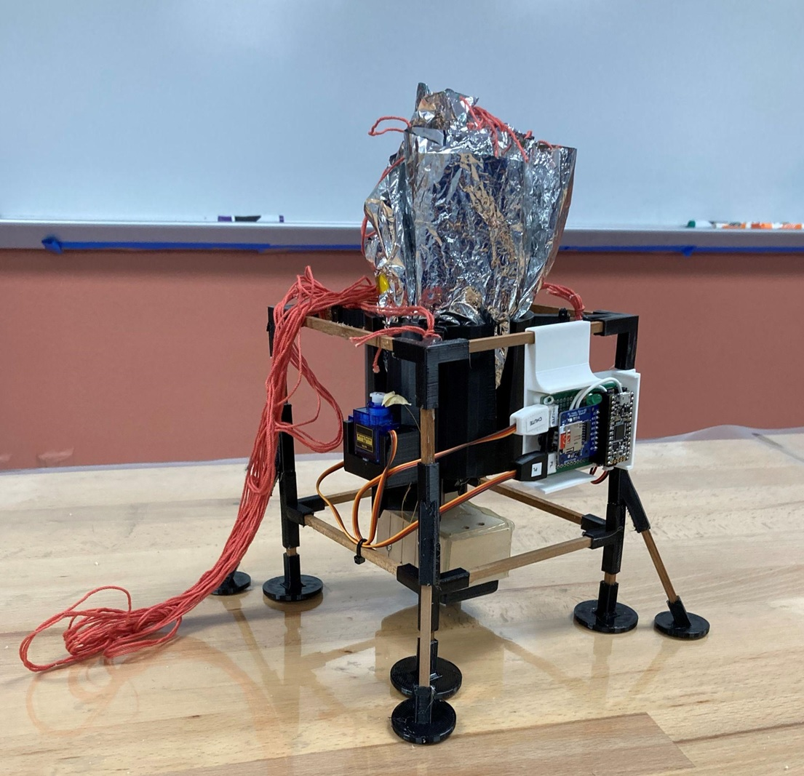
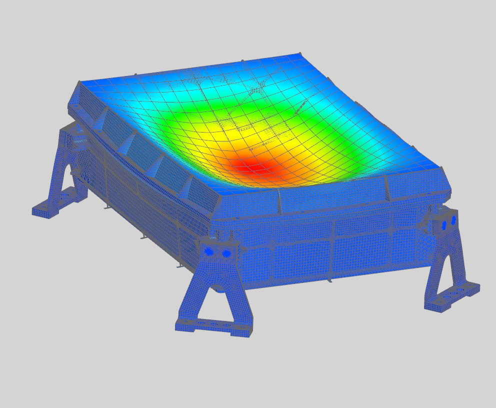

SpaceWorks
These are a series of courses offered at Arizona State University with the goal of teaching students the skills required to contribute to scientific projects fashioned after NASA missions.
SpaceWorks Lvl 1
Collaborated with a team of four to develop a lander that would eject a parachute to safely descend a fifty-foot drop and deploy a payload five seconds after touchdown.
SpaceWorks Lvl 2
Collaborated with a team of four to develop a thermal camera with a moving shutter and a carbon-nylon enclosure to image and read the temperature of thermal targets in a vacuum chamber with a deviation 1.5 degrees Celsius.

SpaceWorks Lvl 3
Trained by Spaceworks staff to use the industry standard Siemens NX application to perform structural analysis on part files and assemblies.
